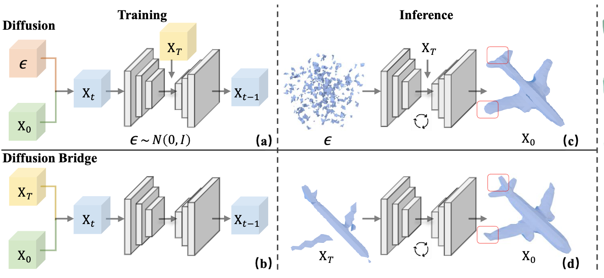
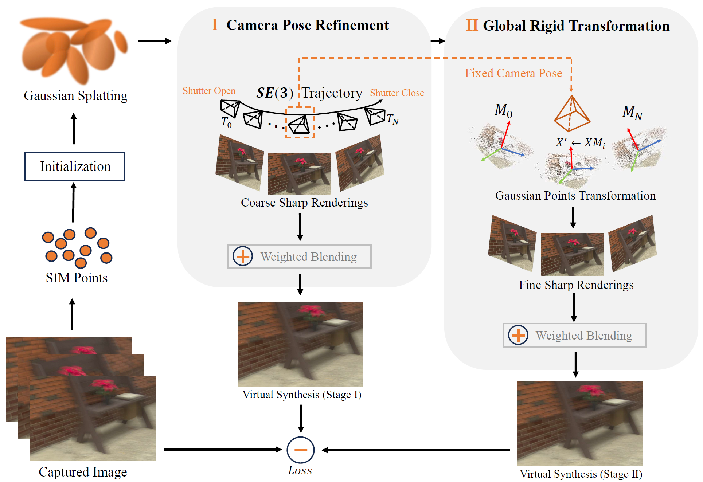
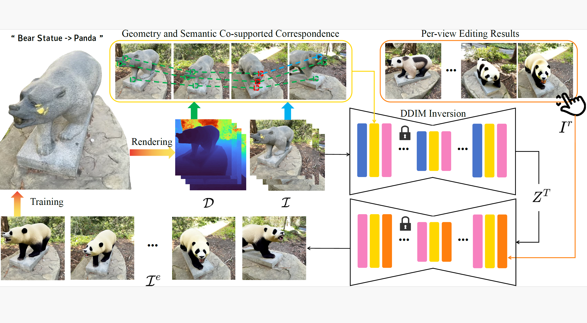
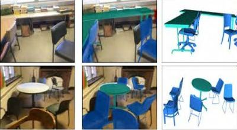
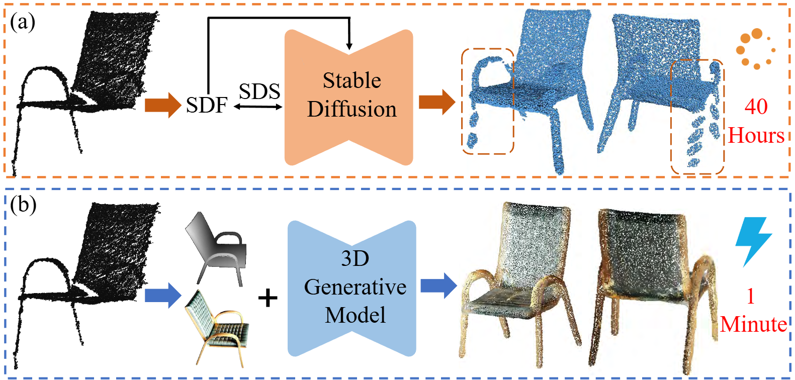
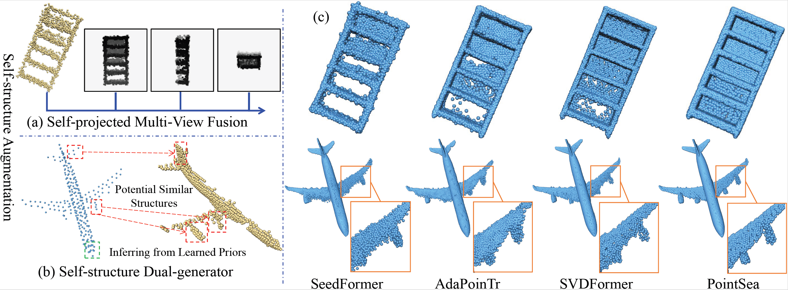
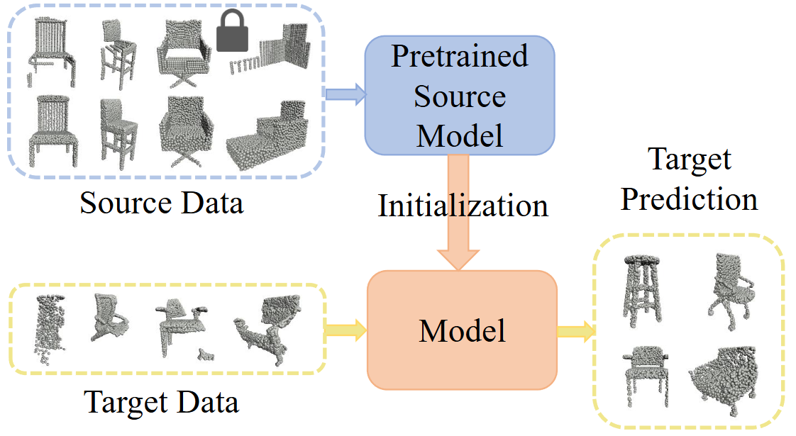
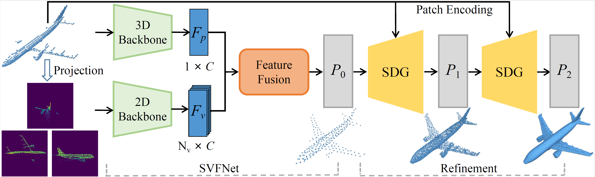
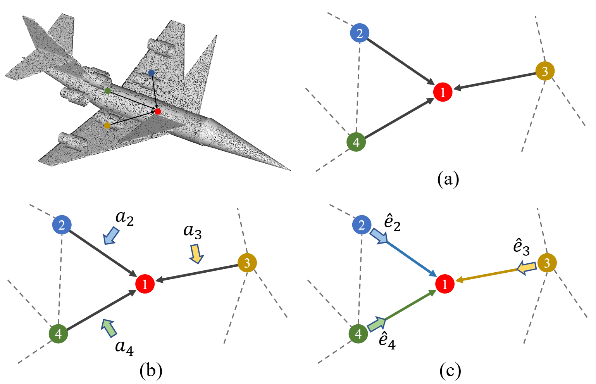

|
Zhe Zhu 朱哲 I am a third-year Ph.D student at Nanjing University of Aeronautics and Astronautics, supervised by Prof. Mingqiang Wei. Currently I am a research intern at Tencent Visvise, collaborating with Mr. Le Wan and Prof. Yuan Liu. Meanwhile, I work closely with Prof. Honghua Chen. Email / CV / Google Scholar / Github |
{kind=link}
ResearchMy research interests are 3D Vision, Computer Graphics, and AIGC. |

|
PartSAM: A Scalable Promptable Part Segmentation Model Trained on Native 3D Data
Zhe Zhu, Le Wan, Rui Xu, Yiheng Zhang, Honghua Chen, Zhiyang Dou, Cheng Lin, Yuan Liu†, Mingqiang Wei† Arxiv Preprint, 2025 Project Page / Code |

|
MeshMosaic: Scaling Artist Mesh Generation via Local-to-Global Assembly
Rui Xu, Tianyang Xue, Qiujie Dong, Le Wan, Zhe Zhu, Peng Li, Zhiyang Dou, Cheng Lin, Shiqing Xin, Yuan Liu†, Wenping Wang, Taku Komura† Arxiv Preprint, 2025 Project Page / Code |
|

|
BridgeShape: Latent Diffusion Schrödinger Bridge for 3D Shape Completion
Dequan Kong, Honghua Chen†, Zhe Zhu, Mingqiang Wei AAAI Conference on Artificial Intelligence (AAAI), 2026. Code |
|

|
BSGS: Bi-stage 3D Gaussian Splatting for Camera Motion Deblurring
An Zhao, Piaopiao Yu†, Zhe Zhu, Mingqiang Wei† ACM International Conference on Multimedia (MM), pp. 8351-8359, 2025. |
|

|
CoreEditor: Consistent 3D Editing via Correspondence-constrained Diffusion
Zhe Zhu, Honghua Chen, Peng Li, Mingqiang Wei† Arxiv Preprint, 2025 |
|

|
CosCAD: Cross-Modal CAD Model Retrieval and Pose Alignment from a Single Image
Zhikun Wen, Honghua Chen Zhe Zhu, Zeyong Wei, Liangliang Nan, Mingqiang Wei† International Conference on Computational Visual Media (CVM), pp. 367-387, 2025. |
|

|
GenPC: Zero-shot Point Cloud Completion via 3D Generative Priors
An Li* Zhe Zhu*, Mingqiang Wei† IEEE/CVF Conference on Computer Vision and Pattern Recognition (CVPR), pp. 1308-1318, 2025. Code |
|

|
PointSea: Point Cloud Completion via Self-structure Augmentation
Zhe Zhu, Honghua Chen†, Xing He, Mingqiang Wei† International Journal of Computer Vision (IJCV), vol. 133, no. 7, pp. 4770-4794, 2025. Code |
|

|
PointSFDA: Source-free Domain Adaptation for Point Cloud Completion
Xing He*, Zhe Zhu*, Liangliang Nan, Honghua Chen, Jing Qin, Mingqiang Wei† Arxiv Preprint, 2025 Code |
|

|
SVDFormer: Complementing Point Cloud via Self-view Augmentation and Self-structure Dual-generator
Zhe Zhu, Honghua Chen, Xing He, Weiming Wang†, Jing Qin, Mingqiang Wei† IEEE/CVF International Conference on Computer Vision (ICCV), pp. 14508-14518, 2023. Code |
|

|
AGConv: Adaptive graph convolution on 3D point clouds
Mingqiang Wei, Zeyong Wei, Haoran Zhou, Fei Hu, Huajian Si, Zhilei Chen, Zhe Zhu, Jingbo Qiu, Xuefeng Yan†, Yanwen Guo†, Jun Wang, Jing Qin IEEE Transactions on Pattern Analysis and Machine Intelligence (TPAMI), vol. 45, no. 8, pp. 9374-9392, 2023. Code |

|
CSDN: Cross-modal shape-transfer dual-refinement network for point cloud completion
Zhe Zhu, Liangliang Nan, Haoran Xie, Honghua Chen†, Jun Wang, Mingqiang Wei†, Jing Qin IEEE Transactions on Visualization and Computer Graphics (TVCG), vol. 30, no. 7, pp. 3545-3563, 2024. Code |
ServicesProgram Committee: PG 2025 Journal Reviewer: TPAMI, IJCV, TVCG, TIP, TMM, Neural Networks, Neurocomputing, EAAI Conference Reviewer: CVPR, ICCV, ICLR, NeurIPS, MM |
|
This page is adapted from this template. |